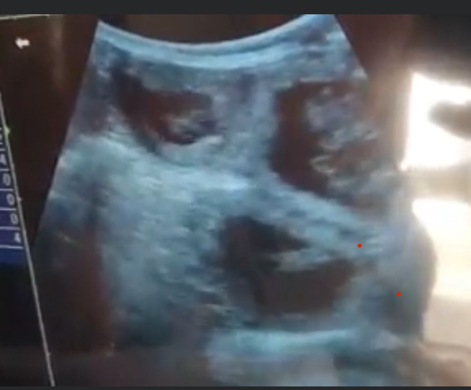
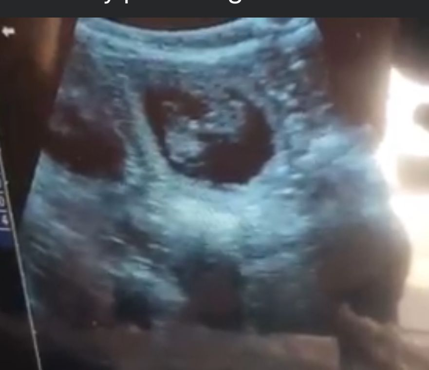
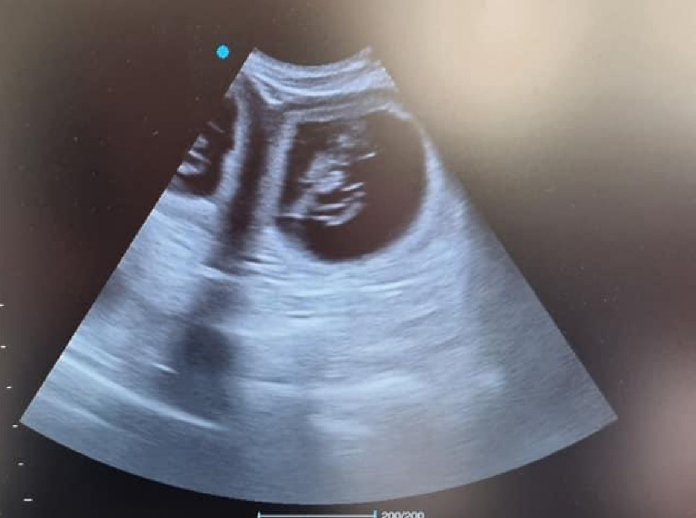

At Julie’s Pet Scanning and Microchipping, I offer top-notch pet ultrasound scanning services across Neath, Port Talbot, Swansea, and Aberdare. Our advanced ultrasound technology provides a safe, non-invasive, and highly accurate method for monitoring your pet’s health and confirming pregnancies.
Pet Scanning Services


Our mobile service brings state-of-the-art scanning equipment right to your home, ensuring a comfortable environment for your pet. This reduces stress and makes the process as smooth as possible, allowing us to deliver precise and detailed ultrasound results.
Whether you’re expecting new puppies or kittens or simply want to keep track of your pet’s pregnancy, I am here to help. I provide high-quality care and vital information about your pet’s well-being during pregnancy.
